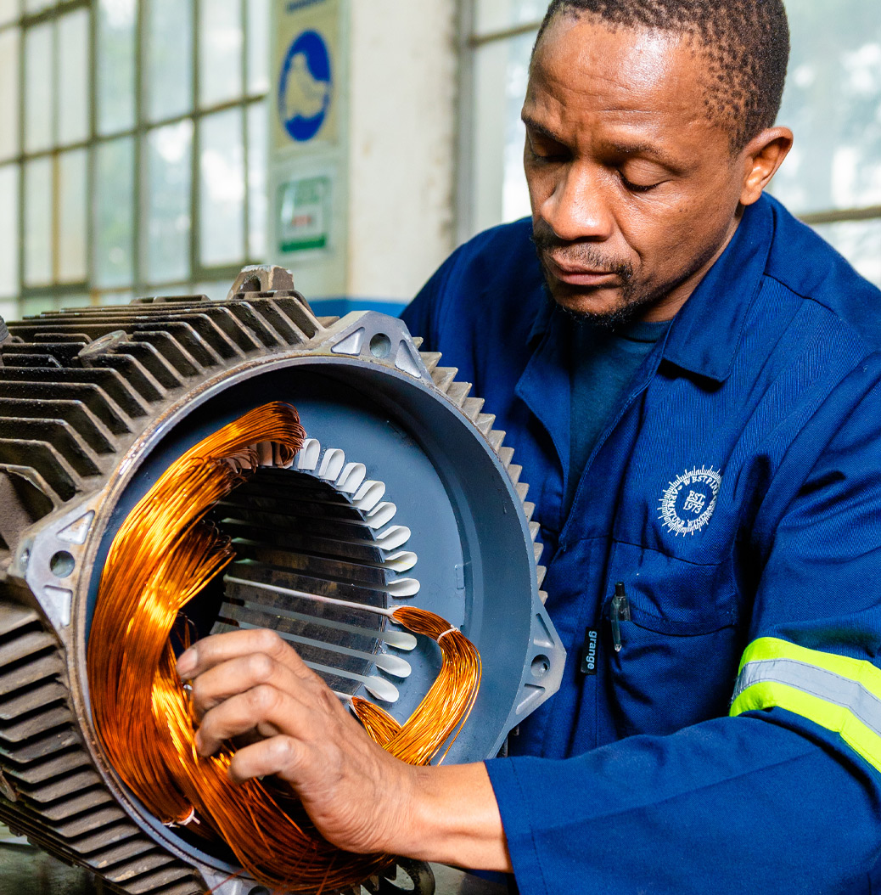
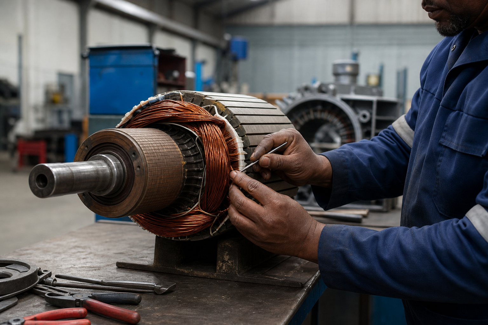
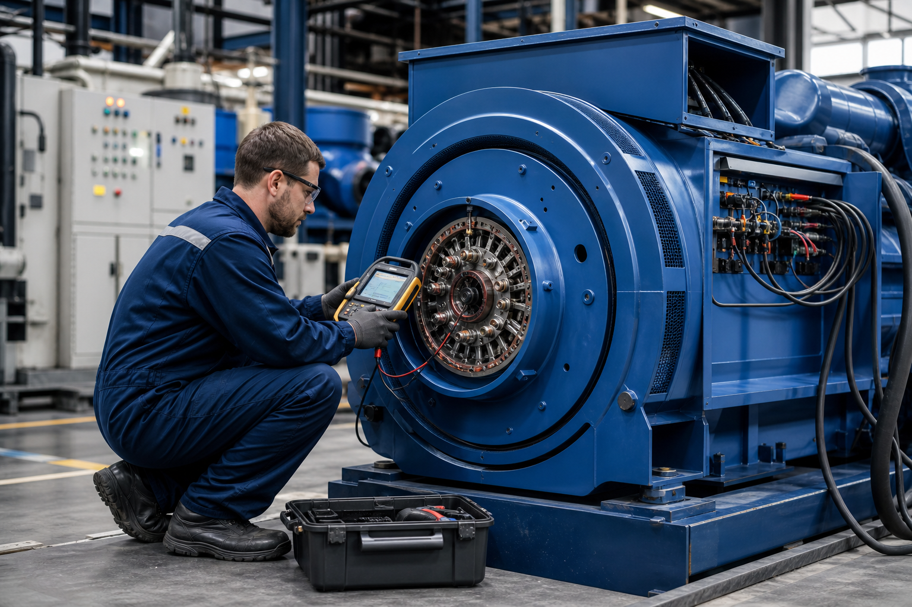
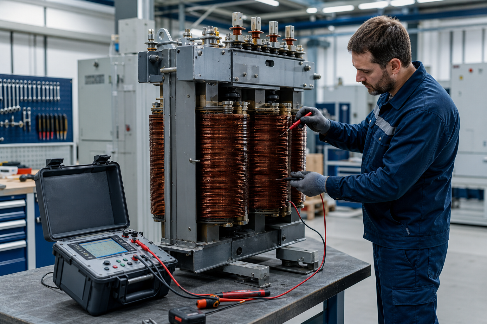
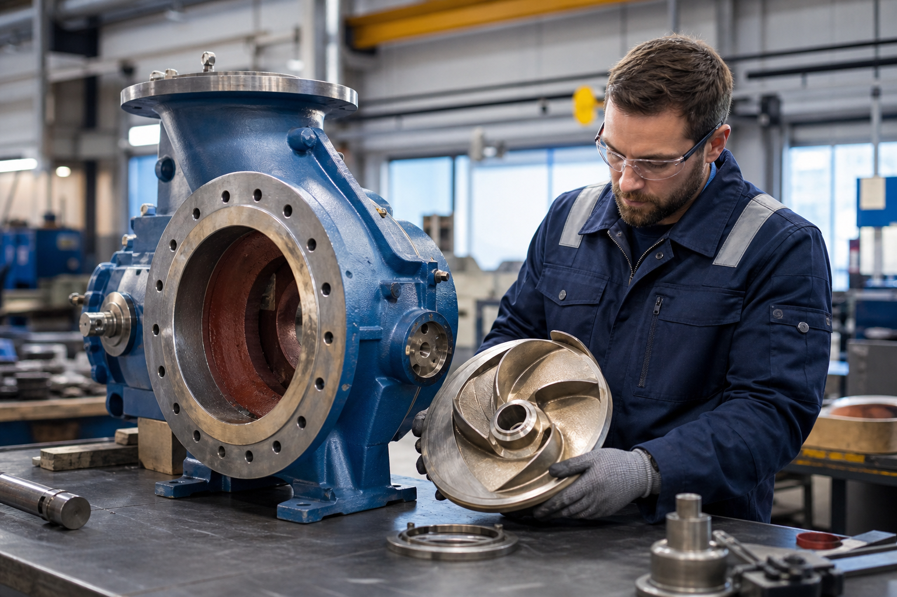
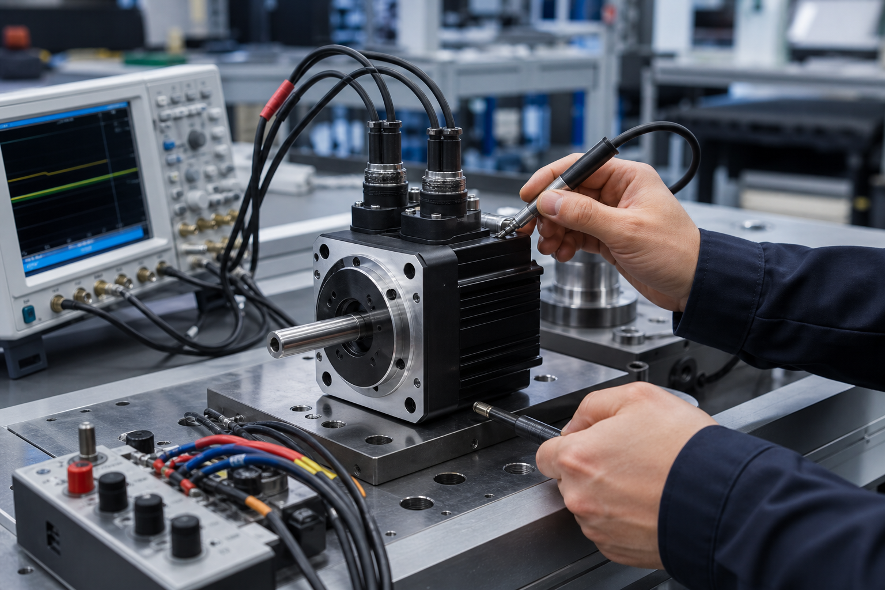
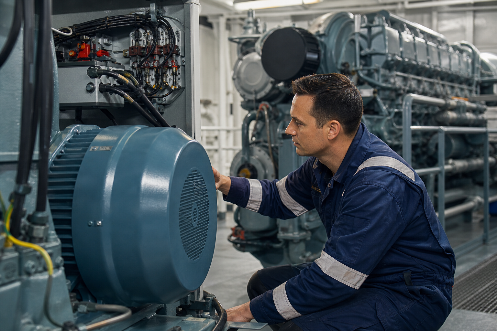

HERTZ Armature Winders (Pty) Ltd provides professional repair, rewinding and maintenance services for electric motors, generators, alternators, transformers, pumps, servo motors and industrial electrical equipment throughout South Africa.

HERTZ Armature Winders (Pty) Ltd has over 36 years of experience providing reliable engineering and electrical repair services to industrial, commercial and marine industries throughout South Africa.
We specialise in electric motor rewinding, generator repairs, transformer servicing, industrial pumps, alternators and precision engineering solutions that minimise downtime and maximise reliability.
Years Experience
Emergency Support
Quality Commitment
Delivering dependable engineering services with over three decades of technical expertise.
Extensive experience in armature winding, industrial electrical repairs and rotating machinery.
Rapid response emergency support to minimise costly production downtime.
Equipped with specialised diagnostic and testing equipment.
Supporting mining, marine, manufacturing and commercial industries.
At HERTZ Armature Winders, our mission has always been simple — to provide dependable engineering solutions backed by honesty, workmanship and technical excellence.
Every repair completed in our workshop reflects more than three decades of experience and a commitment to helping our clients minimise downtime and maximise productivity.
We appreciate the trust our customers place in us and remain committed to delivering quality workmanship, exceptional service and long-term reliability.
Managing Director
HERTZ Armature Winders provides specialist repair, maintenance and refurbishment services for a wide range of industrial electrical equipment.

Repair, rewinding, balancing, bearing replacement and refurbishment of AC & DC electric motors.
Request Service
Complete diagnostics, servicing, rewinding and refurbishment of generators and alternators.
Request Service
Testing, maintenance, insulation checks, repairs and complete refurbishment.
Request Service
Repairs and refurbishment of centrifugal, submersible and industrial pumps.
Request Service
Precision repairs, testing and calibration for industrial automation equipment.
Request Service
Electrical repair and engineering services for marine and offshore industries.
Request ServiceWe proudly provide engineering services to a wide range of industries throughout South Africa.
Explore some of our completed projects, including electric motor repairs, transformer refurbishment, industrial pumps, generators and precision engineering solutions.
Machine breakdowns can happen at any time. Our experienced engineering team is available to assist with urgent electrical and mechanical repair requirements.
Our experienced team is available to assist with breakdowns, repairs and maintenance.
Request A QuoteContact our team for quotations, emergency breakdowns, inspections, repairs and engineering support.
Phoenix Industrial Park
Durban
KwaZulu-Natal
031 109 7856
060 943 5600
061 312 5183
dayalan@hertzarmaturewinders.co.za
accounts@hertzarmaturewinders.co.za
14/3 Aberdeen Drive, Phoenix Industrial Park, Durban